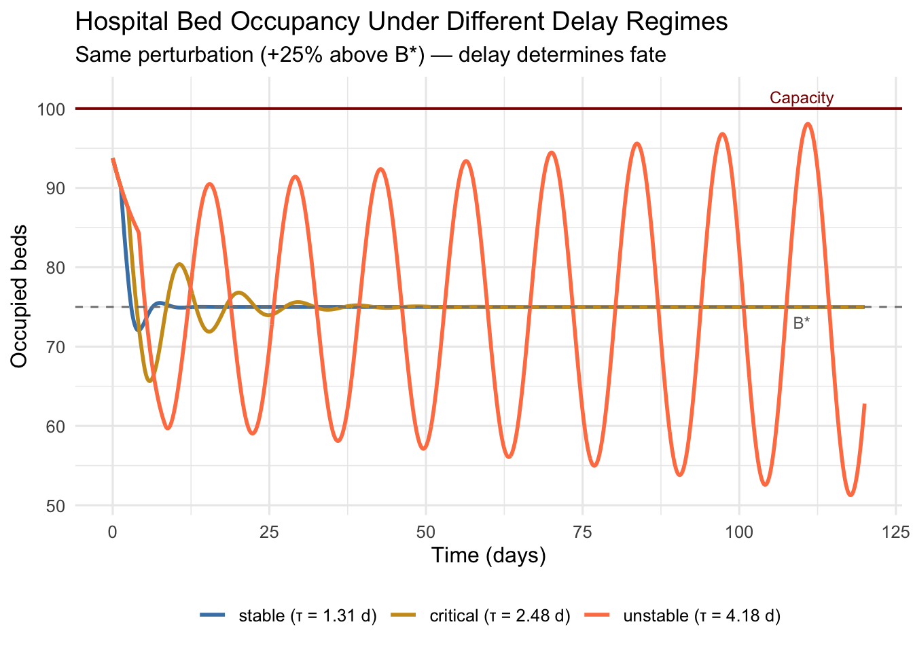

Chapter 13 When the Past Shapes the Present: Stability in Delay Systems
In the previous post, we introduced delay differential equations as a framework for capturing memory effects in biological and healthcare systems. A system governed by a DDE does not respond instantaneously to its current state — its trajectory is shaped by where it has been, not merely where it is. This post focuses on a single, consequential question: when does memory destabilize a system? The answer lives in the characteristic equation of a linearized delay system, a transcendental object whose infinite spectrum encodes everything about how perturbations grow or decay, and how increasing delay can convert a quiet equilibrium into sustained oscillation.
13.1 Linearization and the Characteristic Equation
The path to stability analysis begins, as it does for ordinary differential equations, with linearization around a fixed point. Suppose a multivariable delay system evolves according to
\[ \frac{dx}{dt} = f(x(t),\, x(t-\tau)) \]
where \(x(t) \in \mathbb{R}^d\). A fixed point \(x^*\) satisfies \(f(x^*, x^*) = 0\). Writing \(x(t) = x^* + y(t)\) and expanding to first order yields the linearized system
\[ \frac{dy}{dt} = J_0\, y(t) + J_1\, y(t-\tau) \]
where \(J_0 = \partial f/\partial x(t)\big|_{x^*}\) and \(J_1 = \partial f/\partial x(t-\tau)\big|_{x^*}\) are the Jacobians evaluated at equilibrium. Seeking solutions of the form \(y(t) = e^{\lambda t} v\) for a vector \(v \in \mathbb{C}^d\) and substituting into the linearized equation gives
\[ \lambda e^{\lambda t} v = J_0 e^{\lambda t} v + J_1 e^{\lambda(t-\tau)} v = \left(J_0 + J_1 e^{-\lambda\tau}\right) e^{\lambda t} v \]
For nontrivial solutions, the vector \(v\) must lie in the null space of \(\lambda I - J_0 - J_1 e^{-\lambda\tau}\). The condition for this is the characteristic equation:
\[ \det\!\left(\lambda I - J_0 - J_1 e^{-\lambda\tau}\right) = 0 \]
This single equation encapsulates the entire stability problem. In the ODE case (\(\tau = 0\)), it reduces to the familiar polynomial \(\det(\lambda I - J_0 - J_1) = 0\). With \(\tau > 0\), the presence of \(e^{-\lambda\tau}\) makes it transcendental — it has infinitely many complex roots. The equilibrium is asymptotically stable if and only if every root satisfies \(\text{Re}(\lambda_k) < 0\), a condition that must now be verified over an infinite set.
This infinite dimensionality is not merely a technical annoyance. It reflects a genuine physical truth: the system carries information about its entire history, and each mode \(e^{\lambda_k t}\) in the solution expansion corresponds to a distinct way the past can resurface in the future.
13.2 The Scalar Case: Where Intuition Lives
The multivariable picture is clearest when examined first in one dimension. For the scalar linear DDE
\[ \frac{dy}{dt} = -ay(t) + by(t-\tau), \quad a,b > 0 \]
the characteristic equation is \(\lambda + a - be^{-\lambda\tau} = 0\). When \(\tau = 0\), the single root is \(\lambda = b - a\), which is negative (stable) whenever \(a > b\). As \(\tau\) increases from zero, this root moves continuously in the complex plane, and additional roots materialize. A stability change requires a root to cross the imaginary axis, so we set \(\lambda = i\omega\) with \(\omega \in \mathbb{R}\):
\[ i\omega + a = be^{-i\omega\tau} \]
Taking the modulus of both sides:
\[ \omega^2 + a^2 = b^2 \quad \Longrightarrow \quad \omega = \sqrt{b^2 - a^2} \]
This immediately shows that a crossing only exists when \(b > a\) — delayed feedback strength must exceed the instantaneous decay rate. Taking the argument of both sides and choosing the smallest positive solution:
\[ \tau_c = \frac{1}{\omega}\arctan\!\left(\frac{\omega}{a}\right) = \frac{1}{\sqrt{b^2 - a^2}}\arctan\!\left(\frac{\sqrt{b^2-a^2}}{a}\right) \]
In the pure delayed feedback case \(a = 0\), this simplifies to the form given in the previous post, \(\tau_c = \pi/(2b)\). The general formula is more informative: it shows that the critical delay shrinks as the feedback strength \(b\) increases relative to the decay rate \(a\). Systems with strong delayed feedback destabilize at shorter lags. A hospital system that responds aggressively to a capacity signal from two days ago is more prone to oscillation than one with a weaker, faster response.
13.3 Stability Switches: The Delay as a Bifurcation Parameter
A distinctive feature of delay systems — one with no analogue in ODEs — is that stability is not a monotone function of \(\tau\). As \(\tau\) increases from zero, it is entirely possible for a system to transition from stable to unstable, then back to stable, then unstable again. Each transition corresponds to a root of the characteristic equation crossing the imaginary axis. These stability switches arise because the exponential \(e^{-\lambda\tau}\) is periodic in the imaginary direction: as \(\tau\) grows, it rotates characteristic roots around the complex plane in patterns that can carry them across the imaginary axis multiple times.
To track these crossings systematically, one uses the D-subdivision method or Rekasius substitution, which convert the transcendental problem into a polynomial one by substituting \(e^{-\lambda\tau} = (1 - T\lambda)/(1 + T\lambda)\) for real \(T\). The image of the stability boundary in \((\tau, \text{parameter})\) space traces out curves called stability lobes or crossing curves. Clinical and operational relevance follows directly: if a hospital’s feedback delay \(\tau\) sits inside a stability lobe, admissions and occupancy converge to steady state; outside the lobe, they oscillate. Small changes in process latency — triage response time, electronic health record update frequency, bed assignment lag — can push the system across a lobe boundary without any change in demand level or capacity.
13.4 The Hopf Bifurcation at the Critical Delay
When a pair of complex conjugate roots \(\lambda = \pm i\omega\) crosses the imaginary axis transversally as \(\tau\) passes through \(\tau_c\), a Hopf bifurcation occurs. The qualifier “transversal” means that the roots are actually moving across the axis — the crossing speed
\[ \frac{d}{d\tau}\text{Re}(\lambda)\bigg|_{\tau=\tau_c} \neq 0 \]
must be nonzero. For the scalar case, implicit differentiation of the characteristic equation with respect to \(\tau\) yields an expression for this speed; verifying that it is positive at \(\tau_c\) confirms that the bifurcation is genuine. What emerges from the Hopf bifurcation is a limit cycle — a closed orbit in phase space with frequency approximately \(\omega\) (the imaginary part of the crossing root) and amplitude growing like \(\sqrt{|\tau - \tau_c|}\) near the bifurcation. The delay has not merely destabilized the fixed point; it has replaced it with a new attractor — sustained, periodic oscillation.
This is the mechanism behind a wide class of clinically observed cycles. Cheyne–Stokes respiration, where breathing periodically waxes and wanes in patients with heart failure or brain injury, is governed in part by the delay between arterial \(\text{CO}_2\) levels and the brainstem’s respiratory control response. The classic Mackey–Glass equation, which models blood cell production regulated by delayed feedback from circulating cell counts, undergoes exactly this Hopf bifurcation as the maturation delay increases — and its oscillations correspond to periodic hematological disorders such as cyclical neutropenia.
13.5 Hospital Bed Occupancy: A Healthcare Stability Analysis
Hospital capacity planning provides a natural and consequential setting for DDE stability analysis. The system we consider is a two-variable model coupling bed occupancy \(B(t)\) to the admission rate \(A(t)\), each subject to separate delays. Admissions at time \(t\) depend on how full the hospital appeared \(\tau_f\) time units ago (administrative feedback delay — the lag between observing occupancy and adjusting intake), while occupied beds reflect admissions that occurred \(\tau_a\) time units ago (processing delay — the time between patient presentation and physical bed assignment):
\[ \frac{dB}{dt} = A(t - \tau_a) - \frac{B(t)}{\tau_s} \]
\[ A(t) = A_0\!\left(1 - \frac{B(t - \tau_f)}{B_{\max}}\right) \]
Linearizing around the equilibrium \(B^* = A_0\tau_s(1 - B^*/B_{\max})^{-1}\) (solved implicitly) and writing \(B(t) = B^* + b(t)\), the linearized system becomes
\[ \frac{db}{dt} = -\frac{A_0}{B_{\max}} b(t - \tau_a - \tau_f) - \frac{b(t)}{\tau_s} \]
This reduces to the scalar form with effective delay \(\tau = \tau_a + \tau_f\), decay rate \(a = 1/\tau_s\), and feedback strength \(\beta = A_0/B_{\max}\). The critical delay is
\[ \tau_c = \frac{1}{\sqrt{\beta^2 - a^2}}\arctan\!\left(\frac{\sqrt{\beta^2 - a^2}}{a}\right) \]
The sum \(\tau_a + \tau_f\) is the quantity to monitor operationally. Reducing administrative feedback latency — getting real-time occupancy data to bed managers rather than hourly census reports — is mathematically equivalent to increasing \(\tau_c\), enlarging the stable regime. This is not a managerial platitude; it is a direct consequence of the stability formula.
The following R code implements this model, sweeps across delay values to map the stability boundary, and visualizes the transition from equilibrium convergence to sustained oscillation.
library(deSolve)
library(ggplot2)
library(dplyr)
# -------------------------------------------------------
# Hospital bed occupancy DDE model
# -------------------------------------------------------
hospital_dde <- function(t, state, parms) {
with(as.list(c(state, parms)), {
tlag <- t - (tau_a + tau_f)
lag_B <- if (tlag < 0) B_hist else lagvalue(tlag, nr = 1)
A_in <- A0 * (1 - lag_B / Bmax)
dB <- A_in - state["B"] / tau_s
list(c(B = dB), A_in = A_in, lag_B = lag_B)
})
}
# ---- Parameters ----------------------------------------
A0 <- 50
Bmax <- 100
tau_s <- 6
B_star <- A0 * tau_s * Bmax / (Bmax + A0 * tau_s)
a_decay <- 1 / tau_s
beta_fb <- A0 / Bmax
if (beta_fb <= a_decay) {
stop(sprintf(
"No Hopf crossing: A0/Bmax=%.3f must exceed 1/tau_s=%.3f.",
beta_fb, a_decay
))
}
omega_c <- sqrt(beta_fb^2 - a_decay^2)
tau_c <- atan(omega_c / a_decay) / omega_c
cat(sprintf("B_star = %.2f beds\n", B_star))## B_star = 75.00 beds## tau_c = 2.611 days# ---- Three regimes -------------------------------------
tau_values <- c(
stable = round(0.5 * tau_c, 2),
critical = round(0.95 * tau_c, 2),
unstable = round(1.6 * tau_c, 2)
)
times <- seq(0, 120, by = 0.1)
results <- lapply(names(tau_values), function(regime) {
tau_total <- unname(tau_values[regime])
parms <- list(
tau_a = tau_total / 2,
tau_f = tau_total / 2,
tau_s = tau_s,
A0 = A0,
Bmax = Bmax,
B_hist = B_star
)
sol <- dede(
y = c(B = B_star * 1.25),
times = times,
func = hospital_dde,
parms = parms,
atol = 1e-8,
rtol = 1e-8
)
as.data.frame(sol) %>%
mutate(regime = paste0(regime, " (\u03c4 = ", tau_total, " d)"))
})
df_all <- bind_rows(results)
df_all$regime <- factor(df_all$regime, levels = unique(df_all$regime))
# -------------------------------------------------------
# Robust root finder: Re(lambda) vs tau
# Solves lambda = -a + beta * exp(-lambda * tau)
# Uses Newton-Raphson instead of fixed-point iteration
# to avoid exp() overflow with large imaginary parts
# -------------------------------------------------------
find_Re_lambda <- function(tau, a, beta, omega_init) {
lam <- complex(real = 0, imaginary = omega_init)
for (i in seq_len(400)) {
elam <- exp(-lam * tau)
# Guard against overflow / non-finite values
if (!is.finite(Mod(elam))) {
# Clamp real part to avoid runaway; reset imaginary
lam <- complex(real = 0, imaginary = omega_init * runif(1, 0.8, 1.2))
next
}
f <- lam - (-a + beta * elam) # residual
f_prime <- 1 + beta * tau * elam # analytic derivative
if (!is.finite(Mod(f_prime)) || Mod(f_prime) < 1e-14) break
lam_new <- lam - f / f_prime # Newton step
if (Mod(lam_new - lam) < 1e-12) {
lam <- lam_new
break
}
lam <- lam_new
}
if (is.finite(Re(lam))) Re(lam) else NA_real_
}
tau_grid <- seq(0.01, tau_c * 2.5, length.out = 400)
Re_lambda <- sapply(tau_grid, find_Re_lambda,
a = a_decay, beta = beta_fb, omega_init = omega_c)
df_stability <- data.frame(tau = tau_grid, Re_lambda = Re_lambda)
# ---- Plot 1: Stability boundary ------------------------
p1 <- ggplot(df_stability, aes(x = tau, y = Re_lambda)) +
geom_line(color = "steelblue", linewidth = 1.1) +
geom_hline(yintercept = 0, linetype = "dashed", color = "gray40") +
geom_vline(xintercept = tau_c, linetype = "dotted",
color = "coral", linewidth = 1) +
annotate("text",
x = tau_c + 0.05,
y = max(Re_lambda, na.rm = TRUE) * 0.75,
label = sprintf("\u03c4_c = %.2f d", tau_c),
color = "coral", hjust = 0, size = 4) +
labs(
title = "Real Part of Dominant Characteristic Root vs. Delay",
subtitle = "System destabilises when Re(\u03bb) crosses zero at \u03c4_c",
x = "Total delay \u03c4 (days)",
y = expression(Re(lambda))
) +
theme_minimal(base_size = 12)
# ---- Plot 2: Time-series across regimes ----------------
p2 <- ggplot(df_all, aes(x = time, y = B, color = regime)) +
geom_line(linewidth = 1) +
geom_hline(yintercept = B_star, linetype = "dashed", color = "gray50") +
geom_hline(yintercept = Bmax, color = "darkred", linewidth = 0.7) +
annotate("text", x = 110, y = Bmax + 1.5,
label = "Capacity", color = "darkred", size = 3.2) +
annotate("text", x = 110, y = B_star - 2,
label = "B*", color = "gray40", size = 3.2) +
scale_color_manual(values = c("steelblue", "goldenrod3", "coral")) +
labs(
title = "Hospital Bed Occupancy Under Different Delay Regimes",
subtitle = "Same perturbation (+25% above B*) \u2014 delay determines fate",
x = "Time (days)",
y = "Occupied beds",
color = NULL
) +
theme_minimal(base_size = 12) +
theme(legend.position = "bottom")
print(p1)

The two plots tell a coherent story. The first shows \(\text{Re}(\lambda)\) as a continuous function of \(\tau\), crossing zero precisely at \(\tau_c\) — the moment the dominant root enters the right half-plane and the equilibrium loses stability. The second shows what this means operationally: a hospital with short combined delay (say, one-day processing plus one-day reporting lag) absorbs a 25% census shock and returns to equilibrium within three weeks. The same hospital, with delays extended by longer processing queues and less frequent occupancy reporting, produces occupancy cycles that periodically breach capacity — not because demand changed, but because feedback arrived too late.
13.6 What Infinitely Many Roots Mean in Practice
A natural concern is whether the infinitely many roots of the transcendental characteristic equation are all relevant, or whether a finite few dominate. The answer, fortunately, is the latter. For retarded DDEs (where the highest derivative appears without delay), one can show that for any \(\sigma \in \mathbb{R}\), only finitely many roots satisfy \(\text{Re}(\lambda) > \sigma\). The remaining roots — infinitely many — have real parts tending to \(-\infty\), meaning their contributions to the solution decay arbitrarily fast. This spectral gap ensures that the long-time behavior of a DDE is governed by a finite-dimensional dominant subspace, just as in the ODE case. The infinite dimensionality shapes the function space of initial conditions and the structure of proofs, but it does not complicate numerical prediction once the dominant roots are identified.
This spectral structure also justifies the Hopf bifurcation argument above. At \(\tau = \tau_c\), a single conjugate pair \(\pm i\omega\) sits on the imaginary axis while all other roots remain in the left half-plane with a finite gap. The center manifold theorem, which extends to functional differential equations, guarantees that near this bifurcation, the dynamics reduce to a two-dimensional system governed by the amplitude and phase of the bifurcating modes. Normal form theory then classifies whether the emerging limit cycle is stable (supercritical Hopf) or unstable (subcritical Hopf), determining whether the oscillations are the new attractor or a separatrix.
13.7 Reading Stability Through the Lens of History
The framework developed here offers a way of reading system instability not as a failure of current conditions but as a consequence of how deeply the past is embedded in the present. When a healthcare system oscillates — cycling between overcrowding and underutilization, between nursing surpluses and shortages, between drug shortages and overstock — the culprit is often not the magnitude of demand variability but the latency of the feedback loops that regulate the response. The characteristic equation makes this precise: \(\tau_c\) is not a vague warning about “being careful with delays” but a calculable threshold that depends on the ratio of feedback strength to baseline dissipation. Systems where corrective responses are aggressive (\(b\) large) and natural damping is weak (\(a\) small) have small critical delays — they require more careful management of information and process latency to remain stable.
This perspective reframes many operational problems. A hospital that rolls out hourly bed-status dashboards instead of end-of-day census reports is not just improving information quality in the abstract — it is reducing \(\tau_f\), potentially moving the operating point from the unstable to the stable regime. A drug procurement model that forecasts demand based on last month’s dispensing data rather than real-time orders is operating with a large effective \(\tau\), and the inventory oscillations it produces are mathematically predictable consequences. The transcendental characteristic equation is the bridge between these operational realities and the quantitative language of dynamical systems.
The next post will extend this stability analysis to systems with multiple competing delays — where different feedback pathways operate on different timescales — and examine how the resulting stability lobes in delay-parameter space can be mapped and used for robust system design.